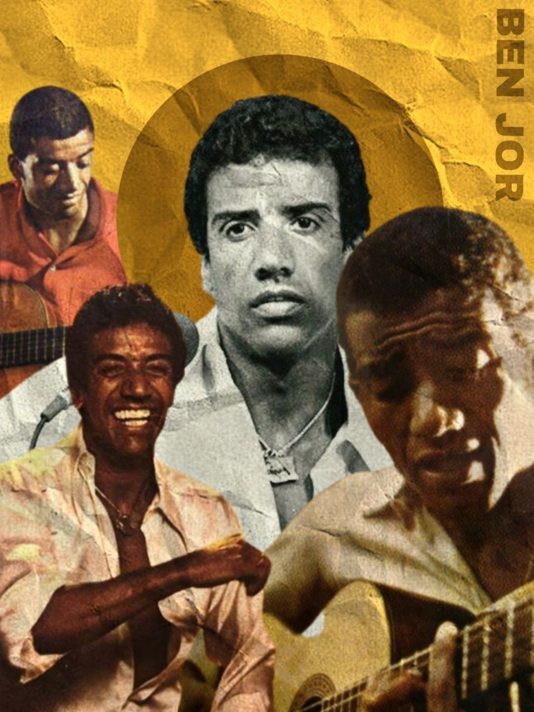

Jorge Ben - Domingas 1969
“Domingas” é uma música de Jorge Ben Jor que fala de forma simples e poética sobre o amor e a admiração por uma mulher. A canção retrata a beleza e o encanto do cotidiano, mostrando o olhar carinhoso do cantor sobre a figura feminina.
Ouça no Spotify: Domingas – Jorge Ben Jor